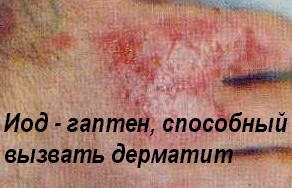
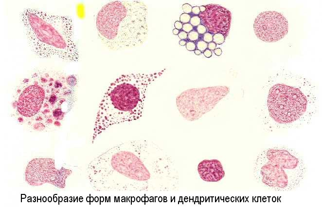
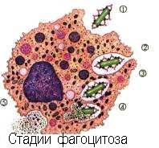
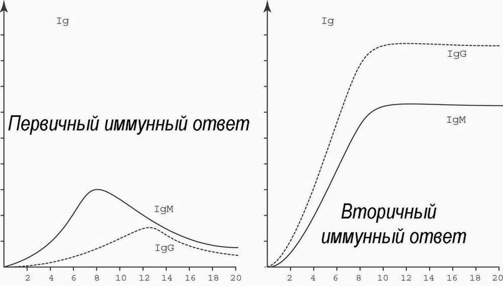
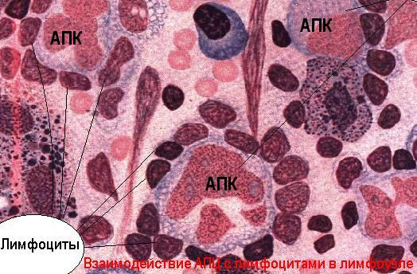

Антигены и их распознавание в иммунной системе
Иммунная система предназначена для поддержания антигенного постоянства организма, для комплементарной регуляции клеточных функций, пролиферации и гомеостаза, а также для защиты организма от чужеродных патогенов. Таким образом, иммунная система должна распознавать индивидуальность патогенов и отличать "свое" (self) от "не своего" (non-self). Эта способность обеспечивается специальным аппаратом распознавания с антиген-специфическими рецепторами на Т- и В- лимфоцитах, которые способны реагировать с уникальными мишенями - антигенами.
Антигенами называют биополимерные природные и синтетические молекулы размером от 1 до 10 кД (белки, полисахариды, сложные эфиры, сложные циклические соединения, нуклеиновые кислоты и полинуклеотиды, а также их комплексы, в том числе, липидсодержащие), способные специфическим образом взаимодействовать с рецепторами Т- и В- лимфоцитов, то есть вызывающие иммунный ответ. При этом иммунный ответ на антигены может выражаться в различных формах (биосинтез комплементарных антигену белков - антител, антигенспецифические клеточные реакции, аллергия, иммунологическая толерантность). Считается, что могут существовать до 109 различных антигенов, следовательно, для специфического распознавания этих антигенов необходимо присутствие эквивалентного количества клонов Т- и В- лимфоцитов, с рецепторами, комплементарными уникальным антигенам. Низкомолекулярные вещества (например, йод) могут вызывать иммунный ответ не сами по себе, а только образуя структурно уникальные комплексы с биополимером носителем. В этом качестве они именуются гаптенами.

Хотелось бы с самого начала опровергнуть анекдотическое, хотя и широко распространенное представление об антигене, исключительно, как о "чужеродном белке", которое благополучно похоронено более тридцати лет назад. Понятие "антиген" подверглось значительной эволюции особенно на протяжении последних 50-60 лет: от практического тождества патогену, через простую противоположность антителу до современного комплексного понятия, базирующегося, прежде всего, на способности комплементарно взаимодействовать со специальными рецепторами лимфоцитов. То есть, антигеном является молекула, способная вызвать при введении в организм иммунный ответ в той или иной форме (в т.ч и в виде толерантности).
Антигенны все те молекулы, которые обладают пространственной структурой, достаточно сложной, чтобы участвовать в комплементарных взаимодействиях, распознавать и распознаваться. Для этого необходима также определённая структурная ригидность. Даже при большом молекулярном весе вещество может не быть антигеном, если его структура - плоскостная (холестерин). Согласно классическим представлениям, неантигенна, например, желатина, хотя это и высокомолекулярный белок. У.Бойд по этому поводу замечает, что желатина лишена третичной структуры, что не даёт ей возможности участвовать во взаимодействиях типа “ключ-замок” (1969). Интересно, что сильно иммуногенными являются лишь полярные соединения. По классическим представлениям, рецепторы разных популяций лимфоцитов способны взаимодействовать с различными детерминатнтами антигена (конформационными, представляющими форму, созданую третичной структурой биополимера, либо секвенциальными - то есть достаточно простыми линейными последовательностями, созданными его первичной структурой). Конформационные детерминанты пространственно выступают из молекулы антигена. Они образованы химическими группами, удалёнными друг от друга по ходу первичной структуры, но сближенными в результате поддержания конформации биополимера. Секвенциальные детерминанты находятся внутри молекулы антигена и состоят из достаточно коротких последовательностей первичной структуры. В ходе иммунного ответа, при процессировании антигенов, после их фагоцитоза АПК, конформационные детерминанты утрачиваются, зато секвенциальные обнажаются и презентируются фагоцитирующей клеткой на поверхности в виде панели. Этот вопрос будет подробно обсужден в дальнейшем (А.Я. Кульберг,1986).
Индивидуальными антигенами в иммунохимии считаются только такие биополимеры, все составляющие которых объединены ковалентными связями. С этой точки зрения, клетки, бактерии и макромолекулярные комплексы обладают множественной антигенной специфичностью. Эпитоп - минимальная единица структуры антигена, распознаваемая антителами или лимфоцитарными антигенными рецепторами. Как правило, иммунодоминантная область молекулы антигена, то есть его эпитопы - это наиболее подвижная и конфигурабильная часть относительно ригидной антигенной структуры. Клон лимфоцитов отвечает на один вид таких детерминант. Иммунный ответ требует определённой плотности эпитопов, при очень высокой или низкой он исчезает. Для иммунного ответа необходима сшивка распознающих структур и эпитопов, поэтому одиночные эпитопы неиммуногенны. По этой причине иммунный ответ всегда требует кооперации АПК и лимфоцитов, в большинстве случаев, как Т-, так и В-популяций.
Некоторые вещества обладают многократно повторяющимися однотипными структурами. К ним относятся бактериальные ЛПС, полимерная форма бактериального жгутикового белка флагеллина, капсульные полисахариды бактерий (декстран, леван), а также фиколл и полипептиды из правовращающих аминокислот (см. выше, раздел “Преиммунный ответ”). Все они трудно метаболизируюся в АПК, но сшивают иммуноглобулиновые рецепторы сами, непосредственно и поэтому способны вызвать поликлональную активацию В-лимфоцитов и синтез ими антител, без участия Т-лимфоцитов.
Индивидуальные антигены располагают нередко несколькими или даже многими различными эпитопами и могут возбуждать ответ нескольких клонов иммунокомпетентных клеток, в том числе одновременно - в разных его формах (например, синтез специфических антител и клональные клеточные реакции).
С точки зрения происхождения формально различают антигены экзогенного и эндогенного происхождения; более существенно деление их на аутоантигены и гетероантигены. Далеко не все эндогенные антигены являются аутоантигенами. Не относятся к аутоантигенам ни маркеры старения, экспрессирущиеся на клетках перед их гибелью (см. выше), ни патологические антигены, появляющиеся на клетках при их травме или болезни. Тем более не являются аутоантигенами патологические антигены, продукция которых индуцирована вирусами, атипичные антигены, связанные с опухолевым перерождением клетки, и пр. Реакция иммунной системы на все вышеперечисленные эндогенные антигены, практически, ничем не отличается от реакции на гетероантигены экзогенного происхождения. Вместе с тем имеются антигены, заурядно присутствующие на нормальных молодых здоровых клетках организма. Отношение иммунной системы к этим аутоантигенам особое. В общем, в норме оно характеризуется иммунологической толерантностью. Помимо эногенных аутоантигенов существуют аутоантигены экзогенного происхождения (перекрестные). Естественно, отношение к ним иммунной системы точно такое же как и к аутоантигенам эногенным (толерангтность).
Иммунный ответ на антиген каждый раз изменяет иммунную систему. Повторное попадание антигена приводит к развертыванию вторичного ответа. Это и есть проявление "положительной" иммунологической памяти. Память специфична, в отличие от так называемого “анамнестического ответа” - неспецифического усиления иммуногенеза против нескольких разных антигенов из-за повышенной продукции лимфокинов.
При первичном иммунном ответе сывороточные антитела определяются через 1-2 недели после того, как организм сталкивается с новым антигеном. Их титр достигает максимума через 1-2 месяца, а затем уровень их концентрации падает. При этом, преобладают иммуноглобулины класса М (см. ниже). Если организм уже отвечал на данный антиген, повторная экспозиция ведет к более быстрому и мощному ответу: антитела определяются уже через несколько дней, их титры достигают многократно более высоких уровней, а падения концентрации не происходит в течение многих месяцев. При этом преобладают иммуноглобулины класса G.
В некоторых случаях, первый контакт с антигеном таким образом изменяет систему, что повторная стимуляция приводит к уменьшению или даже отсутствию иммунного ответа. Это пример "отрицательной" иммунологической памяти, часто называемой приобретенной иммунологической толерантностью.
Специфичность и иммунологическая память - критерии для определения того, что является, а что не является иммунологическим. Например, реакции на NaCl, глюкозу, сульфиты и аспирин хотя и требуют специфического рецепторного распознавания, но не связаны с иммунологической памятью - следовательно не являются иммунологическими; реакция на гетеро- и аутоантигены, наоборот, специфична и связана с иммунологической памятью. Понятие “клетка памяти”, популярное в иммунологии, нуждается в определённой демистификации. Это не какие-то особые клетки, которые только “помнят и больше ничего не делают” - ведь термин “помнить” применяется для того, чтобы ярко обозначить способность к усиленному вторичному иммунному ответу - и не более того. Клетками памяти называют все те лимфоциты, которые появились после первичного иммунного ответа, в результате клональной экспансии, индуцированной антигеном. При контакте с антигеном они способны к усиленному, по сравнению с родоначальником, ответу на антиген. Это и Т, и В-клетки. В-лимфоциты при вторичном иммунном ответе начинают антителообразование не с иммуноглобулинов М, как их предки, а сразу с иммуноглобулинов G.
Так как большинство антигенов не сшивает непосредственно иммуноглобулиновые рецепторы, то Т-клетки способны ответить лишь на секвенциальные детерминанты антигена, представленного AПК в ассоциации с гликопротеидами главного комплекса гистосовместимости (ГКГС) - ГКГС-антигенами I и II классов. В-клетки распознают конформационные детерминанты интактного антигена и, в принципе, могут самостоятельно отвечать на эпитопы, которым комплементарны их иммуноглобулиновые рецепторы, но для полноценного, масштабного ответа нуждаются в помощи Т-клеток.
Антиген-презентирующие функции выполняет, в основном, система мононуклеарных фагоцитов и другие виды клеток (эндотелиальные, глиальные), а кроме того и звездчатые клетки коры тимуса (эктодермального происхождения). Основными клетками, процессирующими антигены для В-лимфоцитов считаются дендритные ретикулярные клетки лимфоидных фолликулов, а для Т-лимфоцитов - интердигитирующие ретикулярные клетки паракортикальных зон лимфоузлов.

.....


|
|
|
|
|
|